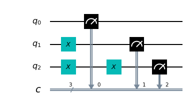
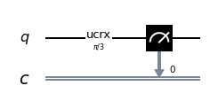
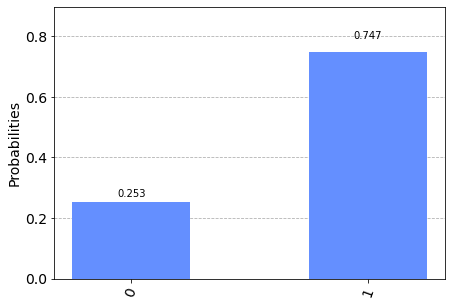

Operatori quantistici NOT e C-NOT
Gli operatori dei tradizionali linguaggi di programmazione di alto livello sono tradotti dai relativi compilatori in brevi sequenze di istruzioni in linguaggio macchina
e a loro volta tali istruzioni sono implementate all'interno dei microprocessori con tecniche di microprogrammazione
le cui microistruzioni utilizzano operatori logici e matematici realizzati direttamente a livello circuitale.
Ad esempio, in questo frammento di codice in linguaggio C:
int v1, v2;
//….
int v = v1 ^ v2;v1 ^ v2 (cioè il calcolo v1 xor v2 eseguito bit a bit) viene tradotta in assembly x86_64 così:mov eax, DWORD PTR [rbp-4]
xor eax, DWORD PTR [rbp-8]
mov DWORD PTR [rbp-12], eaxmov copia il valore della variable v1 nel registro eax,
la seconda istruzione xor esegue l'or esclusivo (lo xor appunto) bit a bit tra il registro eax e la variable v2 e salva il risultato sullo stesso registro eax,
l'ultima istruzione mov assegna il valore del registro eax (che contiene il risultato dello xor bit a bit) alla variable v.La cosa che viene fatta notare è che lo xor è una istruzione implementata direttamente nel microprocessore ed esegue lo xor sui numeri interi a 32 bit (il registro eax contiene 32 bit) e si può immaginare che ci siano nel chip del processore 32 microcircuiti che realizzano il calcolo dello xor, ciascuno circuito operante (in parallelo e indipendentemente dagli altri) su una coppia di bit (uno proveniente dal registro, l’altro dalla memoria). A sua volta ogni microcircuito che calcola lo xor tra due bit è composto da transistor opportunamente collegati e infine tali transistor sono realizzati sfruttando la fisica dello stato solido che è alla base dei semiconduttori.
Al di là dei tecnicismi, la cosa che si vuole mettere in evidenza è che un operatore di un linguaggio di alto livello (l'operatore ^ del C in questo esempio) su un processore ordinario (non quantistico) si appoggia, nel suo livello più basso di astrazione (inaccessibile allo sviluppatore), sulla fisica dello stato solido poiché tale è la fisicità dello strato sottostante più basso (i transistor, appunto).
Un ragionamento simile può essere fatto nella programmazione quantistica: scopo di questo post è mostrare come due operatori quantistici, a partire da un linguaggio di alto livello, sono implementati sfruttando fenomeni di meccanica quantistica.
In particolare il post mostra i fenomeni quantistici sottostanti gli operatori NOT (più correttamente chiamato porta Pauli-X) e C-NOT (NOT Controllato, conosciuto anche come xor quantistico).
Il modello matematico del qubit
Il qubit è descritto matematicamente come uno spazio di Hilbert complesso bidimensionale. La base canonica di questo spazio si indica (usando la notazione di Dirac) con
$$\{|0\rangle,|1\rangle\}$$
che scritta nella forma della base dei vettori delle componenti è
$$\{\begin{bmatrix} 1 \\ 0 \\ \end{bmatrix},\begin{bmatrix} 0 \\ 1 \\ \end{bmatrix}\}$$
e ciascun elemento della base corrisponde rispettivamente ai bit classici 0 e 1.
Come per ogni spazio vettoriale, ogni vettore dello spazio può essere scritto univocamente come combinazione lineare dei vettori della base
$$|\psi\rangle=\alpha|0\rangle + \beta|1\rangle$$
dove $\alpha$ e $\beta$ si chiamano ampiezze di probabilità e devono essere tali da soddisfare $|\alpha|^2 + |\beta|^2 = 1$
La meccanica quantistica dice che se si effettua una misura (rispetto alla base) si può soltanto ottenere lo stato $|0\rangle$ (corrispondente al bit 0)
con probabilità $|\alpha|^2$ oppure lo stato $|1\rangle$ (corrispondente al bit 1) con probabilità $|\beta|^2$.
L'operatore NOT
L'operatore quantistico NOT, che da adesso sarà chiamato con il suo nome più formale di Pauli-X agisce su un singolo qubit
e il suo scopo è invertire il qubit passato rispetto alla base canonica (operazione che corrisponde a una rotazione rispetto all'asse X
sulla sfera di Bloch, si veda Sfera di Bloch su Wikipedia)
Matematicamente bisogna quindi trovare una matrice hermetiana e unitaria (perchè tutti gli operatori quantistci tali devono essere)
che inverta gli stati in maniera tale che:
$$\alpha|0\rangle + \beta|1\rangle \rightarrow \beta|0\rangle + \alpha|1\rangle$$
Una tale matrice è
$$X=\left[\begin{matrix} 0 & 1 \\ 1 & 0 \end{matrix} \right]$$
Che la matrice $X$ sia hermetiana è evidente: essa contiene solo elementi reali ed è simmetrica.
È unitaria perché la sua trasposta coniugata (che è anche la trasposta essendo presenti solo elementi reali) coincide con la sua inversa
e la verifica è un semplice calcolo
$$XX^\dag=XX=\left[\begin{matrix} 0 & 1 \\ 1 & 0 \end{matrix} \right] \left[\begin{matrix} 0 & 1 \\ 1 & 0 \end{matrix} \right]= \left[\begin{matrix} 1 & 0 \\ 0 & 1 \end{matrix} \right] = I$$
Analogamente si dimostra che $X^\dag X=I$ per cui vale $X^\dag=X^{-1}$
Dal punto di vista fisico la realizzazione della porta Pauli-X dipende da come il computer quantistico è realizzato dal punto di vista hardware;
non è scopo di questo post entrare nella realizzazione ingegneristica dei qubit, ma giusto per fissare le idee, se ad esempio il qubit fosse realizzato tramite spin di un elettrone,
la porta Pauli-X sarebbe realizzata provocando una rotazione di $\pi$ intorno all'asse X dello spin dell'elettrone.
Test della porta Pauli-X senza sovrapposizione
Si osservi il seguente frammento di codice Python con Qiskit scritto per essere eseguito all'interno di un Jupyter Notebook utilizzando come backend sia il simulatore 'qasm_simulator' di IBM che il computer quantistico 'ibmq_london' di IBM.
q = QuantumRegister(3, 'q')
c = ClassicalRegister(3, 'c')
circuit = QuantumCircuit(q, c)
circuit.x(q[1])
circuit.x(q[2])
circuit.x(q[2])
circuit.measure(q, c)
e il cui risultato eseguito con un numero di shot=8192 sul simulatore IBM 'qasm_simulator' è il seguente:

Osservando il risultato possiamo avere la prova sperimentale di quanto affermato sopra riguardo al comportamento della porta Pauli-X e possiamo concludere che in assenza di stati di sovrapposizione il comportamento della porta Pauli-X è del tutto paragonabile all'operatore NOT dei linguaggi tradizionali (come ad esempio l'operatore
! del C).
Infatti:
Questo ultimo non sorprende in quanto la matrice X, per quando detto sopra è hermetiana e unitaria e quindi una doppia applicazione in cascata corrisponde alla matrice identità.
Test della porta Pauli-X con sovrapposizione
La sovrapposizione di stati è una peculiarità dei qubit e non ha una corrispondenza nel bit ordinario.
Ci si pone infatti la seguente domanda: qual è il comportamento del qubit in stato di sovrapposizione se a esso viene applicato l'operatore quantistico NOT, o che dir si voglia, la porta Pauli-X?
Si dimostra facilmente che, dato un qubit in stato di sovrapposizione
$$|\psi\rangle=\alpha|0\rangle + \beta|1\rangle$$
la porta Pauli-X inverte che ampiezze di probabilità, ovverosia il qubit dopo una applicazione della porta Pauli-X si porterà nello stato
$$not |\psi\rangle=\beta|0\rangle + \alpha|1\rangle$$
La dimostrazione è la seguente: scrivendo l'applicazione della porta al vettore nella forma dei vettori delle componenti rispetto alla base canonica
ed eseguendo un passaggio di calcolo
$$X|\psi\rangle=\left[\begin{matrix} 0 & 1 \\ 1 & 0 \end{matrix} \right] \left[\begin{matrix} \alpha \\ \beta \end{matrix} \right] = \left[\begin{matrix} \beta \\ \alpha \end{matrix} \right] $$
e tornando nello spazio vettoriale dei qubit otteniamo appunto $\beta|0\rangle + \alpha|1\rangle$, ovverosia l'inversione delle ampiezze di probabilità.
Passando al calcolatore, si sarebbe tentati di usare la porta Hadamard per mettere il qubit in una sovrapposizione di stati; ma ai fini dimostrativi non è molto utile
in quando applicando la porta Hadamard allo stato $|0\rangle$ accadrebbe che $\alpha$ e $\beta$ sarebbero entrambi uguali a $\frac{1}{\sqrt{2}}$
e l'effetto inversione non si vedrebbe bene. Meglio quindi impostare $\alpha$ e $\beta$ con valori diversi.
Si osservi il seguente frammento di codice Python con Qiskit scritto per essere eseguito all'interno di un Jupyter Notebook
utilizzando come backend sia il simulatore 'qasm_simulator' di IBM che il computer quantistico 'ibmq_london' di IBM.
q = QuantumRegister(1, 'q')
c = ClassicalRegister(1, 'c')
circuit = QuantumCircuit(q, c)
circuit.ucrx(np.pi/3, , q0)
circuit.measure(q, c)]
e il cui risultato eseguito con un numero di shot=8192 sul simulatore IBM 'qasm_simulator' è il seguente:

L'operatore
ucrx con argomento $\frac\pi3$ effettua una rotazione di 60° intorno all'asse X portanto $|\alpha|^2=\frac34$ e $|\beta|^2=\frac14$
e difatti se si va a misurare il qubit 0 si ha una probabilità del 75% di ottenere lo stato $|0\rangle$ e del 25% di ottenere $|1\rangle$.Adesso si modifica il programma aggiungendo una porta Pauli-X a seguire l'applicazione della porta
ucrx.
Qui il codice:
q = QuantumRegister(1, 'q')
c = ClassicalRegister(1, 'c')
circuit = QuantumCircuit(q, c)
circuit.ucrx(np.pi/3, , q0)
circuit.x(q0)
circuit.measure(q, c)]

mentre il risultato eseguito sempre con un numero di shot=8192 sul computer quantistico IBM 'ibmq_london' è il seguente:
Nota: Data la natura stocastica di questo codice, i singoli specifici risultati possono variare. Si consideri di eseguire il codice più volte.
Sopra si era detto che la porta Pauli-X effettua una rotazione di $\pi$ intorno all'asse X della sfera di Bloch: programmaticamente l'operatore Pauli-X quindi è del tutto equivalente allo statement:
circuit.ucrx([np.pi], [], q[i])L'operatore C-NOT
Facendo di nuovo un parallelo ideale con un linguaggio di programmazione di alto livello, si immagini di avere il seguente frammento di codice C:
bool c, b;
//….
if (c)
b = !b;cmp BYTE PTR [rbp-1], 0
je .L2
xor BYTE PTR [rbp-2], 1
.L2:La prima istruzione
cmp effettua una comparazione tra il valore della variabile con la costante 0 e imposta a 1 un flag del processore se il confronto dà esito di uguaglianza,
altrimenti quel flag viene impostato a 0;
la seconda istruzione je è un salto condizionato (nel senso di controllato): salta a L2 se quel flag è 0 (e quindi se la variabile c vale 0, cioè false)
mentre la terza istruzione esegue uno xor tra la variabile b e il valore 1 (e per l'algebra booleana corrisponde a fare un not) e quindi salva il risultato sulla variabile b stessa.Anche questa volta un costrutto relativamente semplice del linguaggio di alto livello è implementato con una piccola sequenza di istruzioni in linguaggio macchina e a loro volta ogni istruzione, realizzata in microprogammazione, utilizza della circuiteria interna del processore (in questo caso il flag di confronto e il salto condizionato) a sua volta costruita con dei semiconduttori (transitor) basati sulla fisica dello stato solido. Sui computer quantistici a spin, si è visto che la porta NOT (o meglio Pauli-X) è implementata tramite la rotazione dello spin; la domanda che ci si pone adesso è se esiste un meccanismo quantistico di base su cui appoggiarsi per implementare un NOT controllato. La risposta è affermativa e il fenomeno si chiama entanglement.
Matematicamente TBD TBD TBD TBD TBD TBD
TBD TBD TBD TBD TBD TBD TBD TBD TBD
Test della porta C-NOT senza sovrapposizione
Test della porta C-NOT con sovrapposizione
Download del codice completo
Il codice completo è disponibile su GitHub.
Questo materiale è distribuito su licenza MIT; sentiti libero di usare, condividere, "forkare" e adattare tale materiale come credi.
Sentiti anche libero di pubblicare pull-request e bug-report su questo repository di GitHub oppure di contattarmi sui miei canali social disponibili nell'angolo in alto a destra di questa pagina.